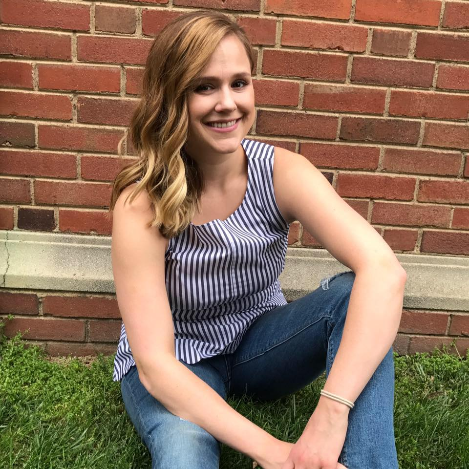
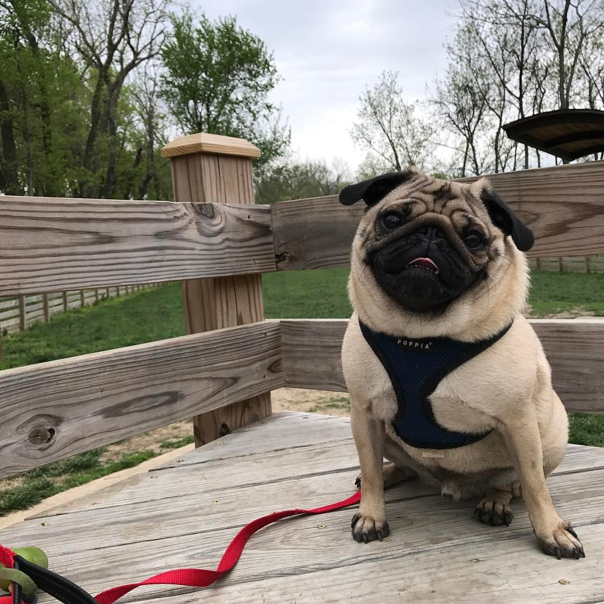
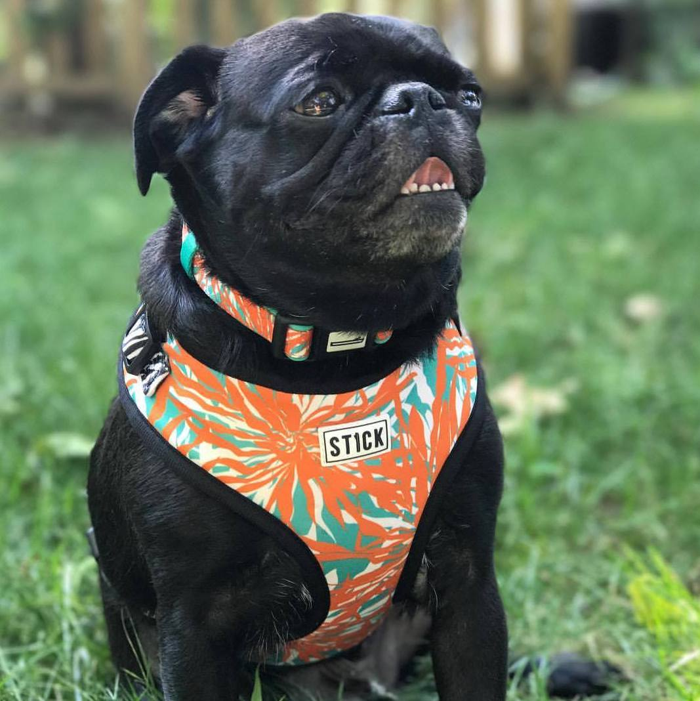

Claire - Wife
This is my wonderful wife Claire. She was born and raised in KC, we met at KU. We've been married for just over 2 years now and have a big, furry family that you'll learn about below!
This is my wonderful wife Claire. She was born and raised in KC, we met at KU. We've been married for just over 2 years now and have a big, furry family that you'll learn about below!
KevinKevin is our little instagram star, @apugnamedkevin. He was our first dog together, we got him as an 8 week old puppy. He loves car rides more than about anything in the world, except maybe naps. |
PhyllisWe just adopted Phyllis earlier this summer. She is a sweetheart who loves to please and snuggle. She is either going 100 miles an hour, or zero. |
Milo
Milo was my cat before Claire and I got together. I adopted him from the Lawrence Humane Society, I got the fattest cat they had. He is a big teddy bar who loves eating grass. |
Ferris
Ferris was Claire's cat from before we met. He is an adventurer/wild man but has recently been turning into a fat and happy house cat just like his bro Milo. |